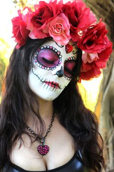

The perfect mixture between spooky and sweet. For halloween enthusiasts who sant to go all-out ghoul with a touch of girlieness.
Apply primer, then white cream makeup/facepaint. The easiest way to do this is with a damp sponge. Apply 2 even layers to ensure full coverage, except for around the eyes, where a thin layer should only be applied.
Apply black eyeshadow to your eyelips and the are around your eyes, to deepen your eye sockets.
Apply black eyeshadow to the tip of your nose in a triangular shape.
Use your liquid liner to go around the edges of the areas you have painted black with shadow to give a clean, crisp look.
Draw flower petals around your eye sockets with your colourful eyeshadow/facepaint. This can be done using thin paint brushes, eyeshadow brushes, or cotton buds!
Outline the petals with black eyeliner.
You can add other details, like flowers, vines, a mouth or teeth, swirls and patterens using your eyeshadow/facepaint and eyeliner, if you like!
Try and make your detailings as symetrical as possible.
Add any necessary touch ups and finishing touches, and the your're good to go!